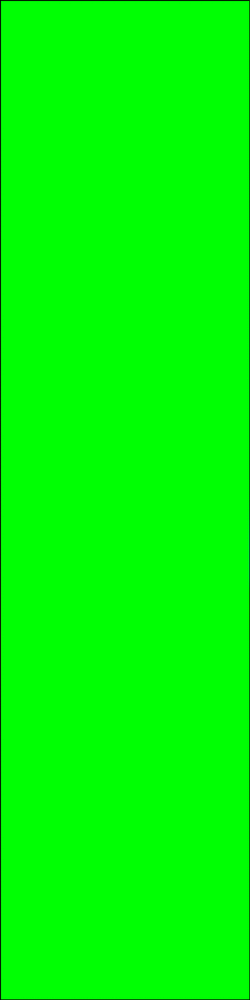
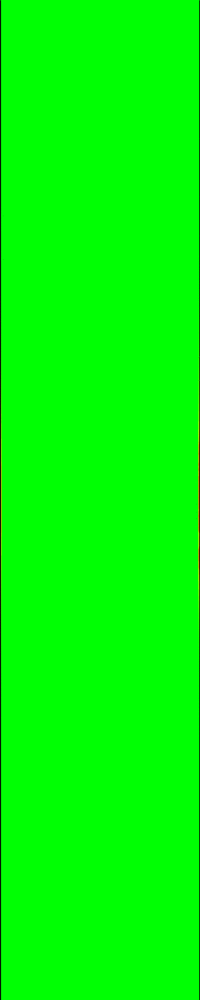

The LB method has received much attention in simulaing particulate flow, primarily because the fluid-solid interface can be easily implemented in the regular Cartesian grids, thereby improving the computational efficiency for moving particle simulations.
Specifically, the no-slip boundary condition can be achieved by modifications on the density distribution function encountering the surface.
An example of LB method for moving boundary simulation is given as below: the cylnder moves with a constant velocity, and vortex shakes off the cylinder.
Drafting-kissing-tumbling

An elliptical particle setttling in a narrow channel

Mass point particles
In engineering applications, we may also treat particles as mass points to track large number of particles with low computational cost.
Below is the animation of 2,500 particles motion in a lid driven cavity.
Application of lattice Boltzmann method (Read more...)